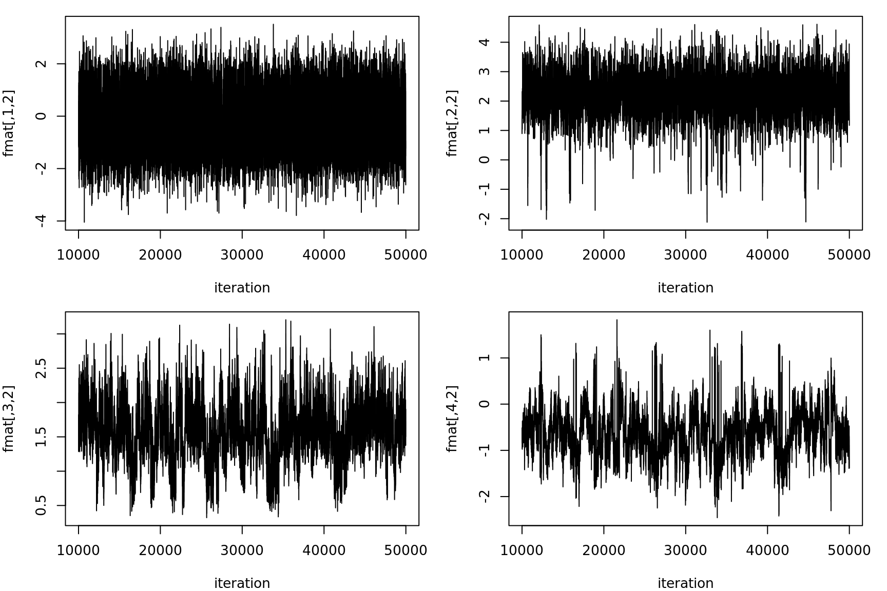
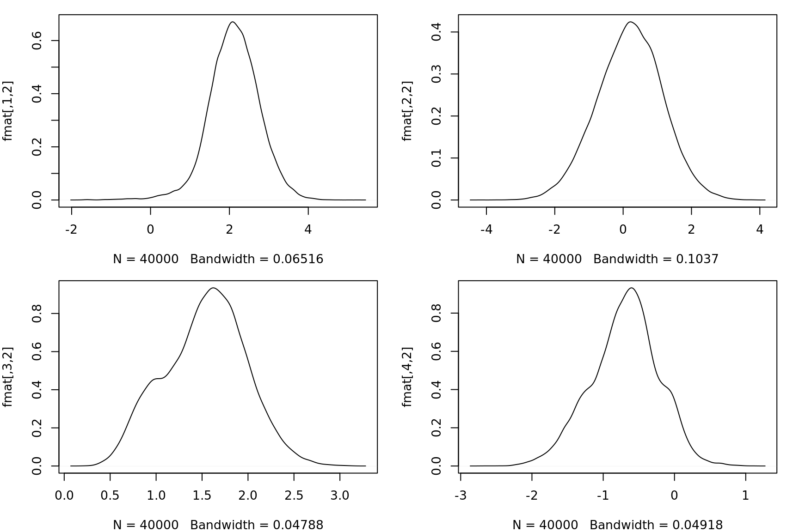
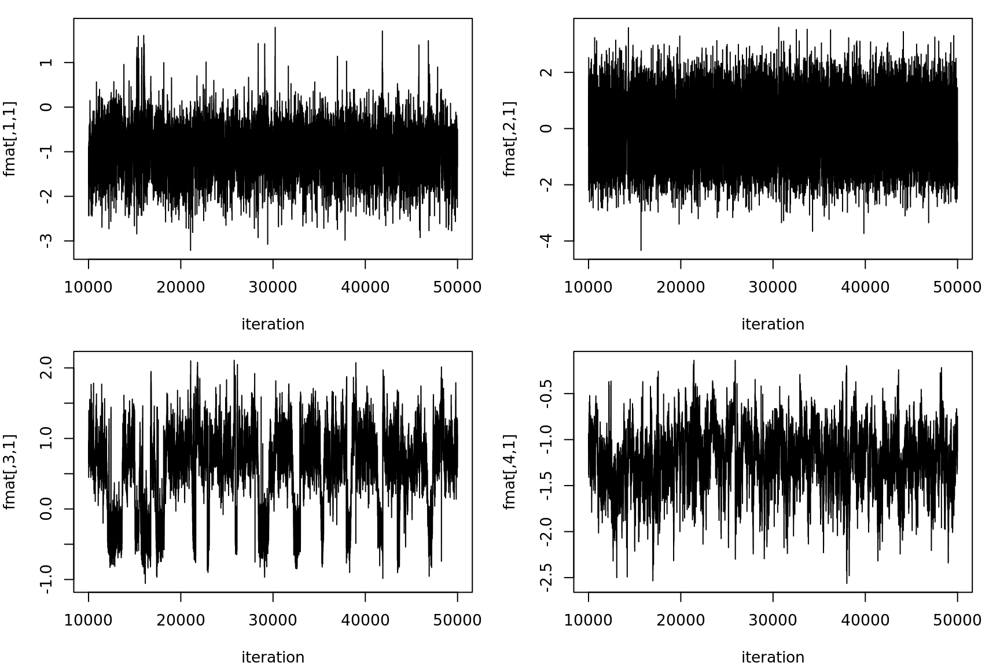

Dealing with model non-identifiability issues when sampling
01 February, 2020
Last updated: 2020-02-01
Checks: 7 0
Knit directory: sparsefactor/
This reproducible R Markdown analysis was created with workflowr (version 1.6.0). The Checks tab describes the reproducibility checks that were applied when the results were created. The Past versions tab lists the development history.
Great! Since the R Markdown file has been committed to the Git repository, you know the exact version of the code that produced these results.
Great job! The global environment was empty. Objects defined in the global environment can affect the analysis in your R Markdown file in unknown ways. For reproduciblity it’s best to always run the code in an empty environment.
The command set.seed(20191231) was run prior to running the code in the R Markdown file. Setting a seed ensures that any results that rely on randomness, e.g. subsampling or permutations, are reproducible.
Great job! Recording the operating system, R version, and package versions is critical for reproducibility.
Nice! There were no cached chunks for this analysis, so you can be confident that you successfully produced the results during this run.
Great job! Using relative paths to the files within your workflowr project makes it easier to run your code on other machines.
Great! You are using Git for version control. Tracking code development and connecting the code version to the results is critical for reproducibility. The version displayed above was the version of the Git repository at the time these results were generated.
Note that you need to be careful to ensure that all relevant files for the analysis have been committed to Git prior to generating the results (you can use wflow_publish or wflow_git_commit). workflowr only checks the R Markdown file, but you know if there are other scripts or data files that it depends on. Below is the status of the Git repository when the results were generated:
Ignored files:
Ignored: .RData
Ignored: .Rhistory
Ignored: .Rproj.user/
Ignored: .ipynb_checkpoints/
Ignored: src/RcppExports.o
Ignored: src/cavi.o
Ignored: src/digamma.o
Ignored: src/gibbs.o
Ignored: src/lap.o
Ignored: src/modString.o
Ignored: src/myFunction.o
Ignored: src/relabel.o
Ignored: src/sparsefactor.so
Untracked files:
Untracked: .Rbuildignore
Untracked: Rplots.pdf
Untracked: code/
Untracked: papers/
Unstaged changes:
Modified: sparsefactor.Rproj
Note that any generated files, e.g. HTML, png, CSS, etc., are not included in this status report because it is ok for generated content to have uncommitted changes.
These are the previous versions of the R Markdown and HTML files. If you’ve configured a remote Git repository (see ?wflow_git_remote), click on the hyperlinks in the table below to view them.
| File | Version | Author | Date | Message |
|---|---|---|---|---|
| Rmd | 51f4855 | Yong See Foo | 2020-02-01 | wflow_publish(c(“analysis/index.Rmd”, “analysis/gibbs.Rmd”, |
| html | 678960a | Yong See Foo | 2020-01-27 | Build site. |
| Rmd | b73af40 | Yong See Foo | 2020-01-27 | wflow_publish(c(“analysis/gibbs.Rmd”)) |
| html | 81f06ec | Yong See Foo | 2020-01-26 | Build site. |
| Rmd | 043ce3d | Yong See Foo | 2020-01-26 | updated DESCRIPTION |
| html | 043ce3d | Yong See Foo | 2020-01-26 | updated DESCRIPTION |
We first simulate gene expression data across 40 genes for 12 individuals. This data is explained by 2 sparse factors (\(\pi_1=\pi_2=0.2\)) and 2 dense factors (\(\pi_3=\pi_4=0.8\)). A sparse factor regulates a gene with probability 0.2, whereas a dense factor regulates a gene with probability 0.8. The gene-specific precision of the Gaussian noise is simulated from \(\text{Gamma}{(1,0.1)}\). For details of the model, see Section 1 of the derivation.
set.seed(0)
K <- 4 # number of factors
N <- 12 # number of individuals
G <- 40 # number of genes
data <- simulate.data(K=K, N=N, G=G,
pivec=c(rep(0.2, 2), rep(0.8, 2)),
alphavec=rep(1, 4),
taushape=1, taurate=0.1)A Gibbs sampler is used to simulate the posterior. 50,000 samples are simulated, the first 10,000 of which are discarded as a burn-in.
N.TOT <- 50000
N.BURN <- 10000
samples <- burn.thin(gibbs(N.TOT, data$ymat,
pivec=c(rep(0.2, 2), rep(0.8, 2)),
ptaushape=1, ptaurate=1,
palphashape=1, palpharate=1, seed=0),
burn=N.BURN, thin=1)39.912 sec elapsedTo assess whether the sampler has converged to a stationary distribution, we look at trace plots of the simulated samples. As an example, here are the trace plots for the factor activations for individual 2:
j <- 2 # individual 2
for(k in 1:K) {
vec = samples$fmat[,k,j]
plot(0, 0, xlab="iteration", type="n", ylab=paste0("fmat[,",k,",",j,"]"),
xlim=c(N.BURN + 1, N.TOT), ylim=c(min(vec), max(vec)))
lines((N.BURN+1):N.TOT, vec, type="l")
}
| Version | Author | Date |
|---|---|---|
| 043ce3d | Yong See Foo | 2020-01-26 |
For both factors 1 and 2, the simulated values appear to be a mixture of: (i) values sampled around a local mode around 2, (ii) values sampled around a local mode around -2, and (iii) values sampled around a local mode near 0, with comparatively larger variance.
The behaviour occurs due to the non-identifiability of the model. The gene expression level of gene \(i\) of individual \(j\) is modelled as \[y_{ij} = \sum_{k=1}^K l_{ik}f_{kj} + e_{ij},\] where \(l_{ik}\) is the regulation strength of factor \(k\) on gene \(i\), \(f_{kj}\) is the activation weight of factor \(k\) for individual \(j\), and \(e_{ij}\) is a noise term. For a fixed \(k\), note that flipping the signs of \(l_{ik}\) and \(f_{kj}\) (for all \(i\) and \(j\)) does not change the model. This explains the presence of two equivalent modes around 2 and -2 in the first two trace plots. This is an example of sign switching. If we take the mean across all samples, the estimated mean will be shrunk towards 0 due to the presence of the two modes. Thus, to obtain more accurate posterior summaries, it is desirable for only one of these modes to be present.
We can therefore deduce that \(f_{1,2}\) and \(f_{2,2}\) should have means near 0 and 2 (or equivalently, -2), in either order. However, in the trace plots, factor 1 and factor 2 both have samples simulated around both modes. This occurs because the roles of factor 1 and factor 2 are swapped at certain iterations of sampling. This is an example of label-switching: for fixed \(k\) and \(k'\), if \(l_{ik}\) is swapped with \(l_{ik'}\) and \(f_{kj}\) is swapped with \(f_{k'j}\) (for all \(i\) and all \(j\)), the model does not change. This happens for \(k=1,\,k'=2\), and also for \(k=3,\,k'=4\).
To undo label and sign switching, a relabelling algorithm is used. The intuition is that each sample is relabelled (i.e. signs and labels are switched) such that the sampled distribution of each entry resembles a normal distribution, hence having only one mode. For details of this algorithm, see Section 2.2 of the derivation. After relabelling, the trace plots are as follows:
relabelled <- relabel(samples)116.853 sec elapsedfor(k in 1:K) {
vec = relabelled$fmat[,k,j]
plot(0, 0, xlab="iteration", type="n", ylab=paste0("fmat[,",k,",",j,"]"),
xlim=c(N.BURN + 1, N.TOT), ylim=c(min(vec), max(vec)))
lines((N.BURN+1):N.TOT, vec, type="l")
}
| Version | Author | Date |
|---|---|---|
| 043ce3d | Yong See Foo | 2020-01-26 |
The switching behaviour seems to be mostly removed. This is confirmed by the fact that the posterior densities appear to be unimodal:
for(k in 1:K) {
plot(density(relabelled$fmat[,k,j]), main="", ylab=paste0("fmat[,",k,",",j,"]"))
}
| Version | Author | Date |
|---|---|---|
| 043ce3d | Yong See Foo | 2020-01-26 |
Unfortunately, this relabelling algorithm is not always successful. For example, some switching behaviour remains for the factor activations of individual 1 (especially factor 3):
j <- 1
for(k in 1:K) {
vec = relabelled$fmat[,k,j]
plot(0, 0, xlab="iteration", type="n", ylab=paste0("fmat[,",k,",",j,"]"),
xlim=c(N.BURN + 1, N.TOT), ylim=c(min(vec), max(vec)))
lines((N.BURN+1):N.TOT, vec, type="l")
}
| Version | Author | Date |
|---|---|---|
| 043ce3d | Yong See Foo | 2020-01-26 |
Further investigation is needed to determine whether this is caused by a flawed implementation, or an inherent deficiency of the method.
sessionInfo()R version 3.6.1 (2019-07-05)
Platform: x86_64-pc-linux-gnu (64-bit)
Running under: Ubuntu 18.04.3 LTS
Matrix products: default
BLAS: /usr/lib/x86_64-linux-gnu/blas/libblas.so.3.7.1
LAPACK: /usr/lib/x86_64-linux-gnu/lapack/liblapack.so.3.7.1
locale:
[1] LC_CTYPE=C.UTF-8 LC_NUMERIC=C LC_TIME=C.UTF-8
[4] LC_COLLATE=C.UTF-8 LC_MONETARY=C.UTF-8 LC_MESSAGES=C.UTF-8
[7] LC_PAPER=C.UTF-8 LC_NAME=C LC_ADDRESS=C
[10] LC_TELEPHONE=C LC_MEASUREMENT=C.UTF-8 LC_IDENTIFICATION=C
attached base packages:
[1] stats graphics grDevices utils datasets methods base
other attached packages:
[1] tictoc_1.0 sparsefactor_1.0 workflowr_1.6.0
loaded via a namespace (and not attached):
[1] Rcpp_1.0.3 rprojroot_1.3-2 digest_0.6.23 later_1.0.0
[5] R6_2.4.1 backports_1.1.5 git2r_0.26.1 magrittr_1.5
[9] evaluate_0.14 stringi_1.4.5 rlang_0.4.3 fs_1.3.1
[13] promises_1.1.0 whisker_0.4 rmarkdown_2.1 tools_3.6.1
[17] stringr_1.4.0 glue_1.3.1 httpuv_1.5.2 xfun_0.12
[21] yaml_2.2.0 compiler_3.6.1 htmltools_0.4.0 knitr_1.27